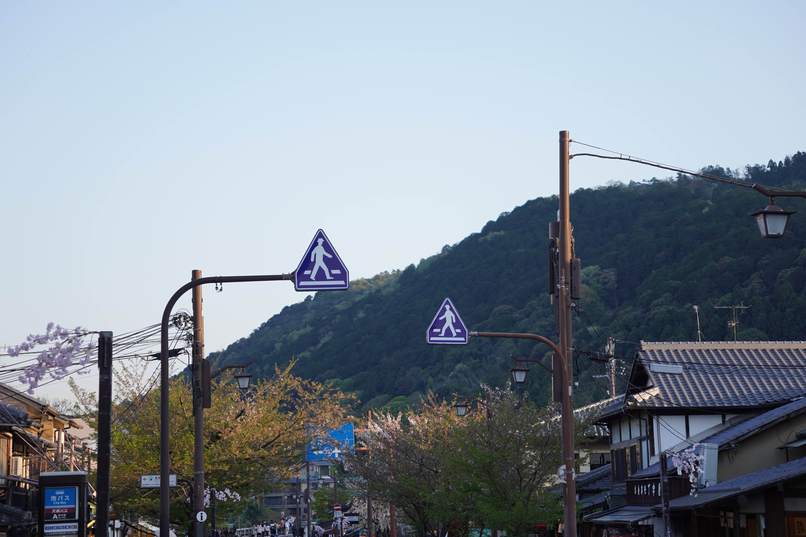
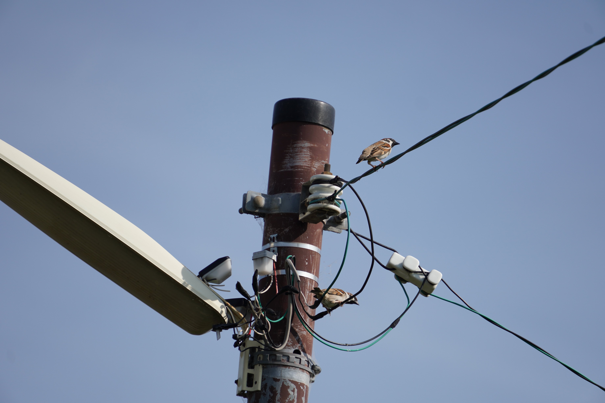

YUSHI WATANABE
ABOUT
2017年より、関西でWebエンジニアをしています。
PHP、JavaScriptをよく書いています。
広く浅くかじるタイプです。
趣味は、ギター・ベース、音楽・漫画・アニメ鑑賞、将棋、卓球、ルービックキューブ、写真などです。
HISTORY
- 2020/04〜現在
株式会社スマレジ
Webエンジニアとして、勤怠管理の自社サービスの開発に携わっている。リードエンジニアとして、重要度の高い実装や上流寄りの工程、教育やレビューを担当。1on1の開始、振り返り会の企画・進行などといったチーム運営にも取り組んでいる。使用技術
Laravel, Vue.js, CakePHP2, jQuery, TypeScript, SCSS - 2018/01〜2020/03
株式会社SICデジタル
Webアプリ開発やiOSアプリ開発を担当。1~10人月程度の小規模な新規開発・改修に携わった。使用技術
Laravel, Vue.js, iOS/swift, Objective-C - 2016/12~2017/12
株式会社Silett
研究室の同期の起業に参加した。自社制作の対話システムを活用したアプリケーション制作に携わった。スマホアプリのクライアント部、サーバ部、インフラ周りなどを担当した。使用技術
iOS/swift, PHP, C#, AWS, Line Messaging API - 2011/04〜2017/03
大阪大学・大阪大学大学院
研究室では、コミュニケーションロボットに関する研究に携わった。Pythonを利用し、心拍データの加工・計算や、統計解析などを行った。Java・C++を利用し、コミュニケーションロボットの挙動を制御するシステムを制作した。使用技術
Python, Java, C++
SKILLS
PHP
実務5年
サーバサイドではPHPを使う機会が多い。Laravelを中心に、CakePHP2も経験がある。
JavaScript
実務4年
Vue.js・jQueryを使うケースが多い。既存システムへのwebpackやTypeScriptの導入も担当。
iOS/swift
実務1年
受託開発にて、業務システムの制作などで利用。
HTML/CSS
実務半年/実務外半年
実務で使うケースは少なく、本ページは学習も兼ねて作成した。
Python
実務3ヶ月/実務外2年
主に、学生時代の研究活動で利用した。numpy/pandas等を利用した統計解析や、簡単なシステム操作のUI作成など。
資格など
-
基本情報技術者試験, 応用情報技術者, TOEIC 770点, 給与計算実務能力検定 2級
その他
短期間の実務経験や実務外での利用
DB設計, SQL, Java, C++, C#, Objective-C, Go, TypeScript, React, AngularJS, Nuxt.js, Next.js, SCSS, AWS, Line Messaging API, Docker, Vagrant
LINKS
将棋盤
https://github.com/nek0meshi/shogi-board
Vue.js3, TypeScript。
将棋盤を製作。駒を動かしたり、相手の駒を取ったり、成ったりすることができる。TypeScriptやVue3のの学習も兼ねて製作。
Profile
https://github.com/nek0meshi/profile
HTML/CSS, Nuxt.js, SCSS。
本サイト。エンジニアとしてのスキル・経歴・リンク集の紹介や、HTML/CSSの学習のため製作。
Tetris
https://github.com/nek0meshi/tetris
TypeScript, React。
テトリスゲーム。TypeScript・Reactの学習のため製作。
TODOリスト
https://github.com/nek0meshi/todo-list
Golang, Vue.js3, Bulma。
単純なTODOリスト。Go言語の学習のため製作。
タイピングゲーム
https://github.com/nek0meshi/typing
Vue.js3, TypeScript。
単純なタイピングゲーム。TypeScript・Vue.js3の学習のため製作。
ブログ
https://yushi-dev.hatenablog.com/
現職の入社後に始めたブログ。学習の記録としての記事が多く、イベント観覧や読んだ書籍に関する記事もある。はてなブログ。2020/06〜現在。
Profile v1
https://github.com/nek0meshi/profile/tree/master/v1
HTML/CSS, Nuxt.js, SCSS, bulma。
プロフィールページの過去バージョン。エンジニアとしてのスキル・経歴・リンク集の紹介や、HTML/CSSの学習のため製作。
PHOTOS


